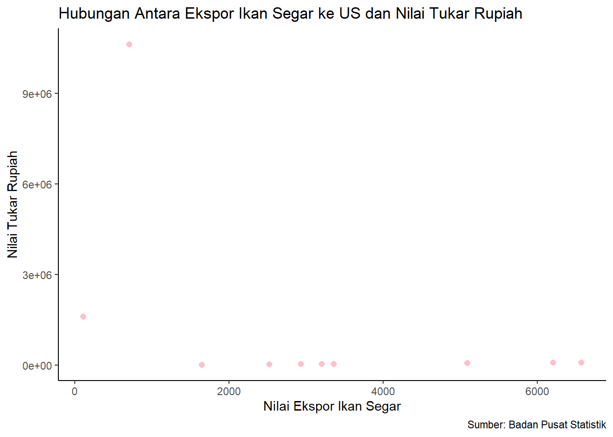

library(tidyverse)
library(readxl)
library(WDI) Analisis Pengaruh Nilai Tukar Rupiah Terhadap Ekspor Ikan Segar ke Amerika Serikat tahun 2012-2021
Metode Penelitian Politeknik APP Jakarta

1 Pendahuluan
1.1 Latar belakang
Kegiatan perdagangan internasionnal memiliki peran penting terhadap pertumbuhan ekonomi suatu negara, kegiatan tersebut dapat menambah jumlah output dan laju pertumbuhan ekonomi negaranya. Salah satu cara untuk memaksimalkan kegiatan perdagangan internasional adalah dengan memanfaatkan potensi alam yang dimiliki oleh suatu negara. Potensi alam Indonesia terutama pada sektor perikanan juga dapat dimanfaatkan untuk kegiatan perdagangan internasional. Permintaan ikan dunia dari tahun ke tahun cenderung meningkat akibat meningkatnya jumlah penduduk dan kualitas hidup yang diikuti perubahan pola konsumsi masyarakat. Peningkatan kualitas hidup tersebut menyebabkan bergesernya pola konsumsi makanan ke jenis makanan sehat. Makanan sehat dicirikan dari rendahnya kandungan kolesterol dan tingginya kandungan protein salah satunya adalah ikan (Amalia et al., 2013).
Adanya pandemi Covid-19 sempat menyebabkan penurunan dalam nilai ekspor ikan segar global sebesar USD 152 miliar, penurunan tersebut mencapai 7% jika dibandingkan tahun 2019. Hal tersebut terjadi secara sebaliknya pada Indonesia, di saat seluruh eksportir utama produk perikanan mengalami penurunan, Indonesia justru mengalami peningkatan dan naik dua peringkat sehingga berada di posisi delapan sebagai eksportir utama produk perikanan dunia pada tahun 2020. Hasil perikanan Indonesia merupakan salah satu komoditas unggulan se-Asia.
Amerika Serikat menjadi salah satu tujuan ekspor utama produk perikanan Indonesia. Perkembangan nilai ekspor ikan segar ke Amerika Serikat cukup tidak stabil jika dilihat dari tahun 2012-2021. Bisa dilihat sejak tahun 2017 sampai 2021 nilai ekspor ikan segar ke amerika serikat mengalami penurunan secara terus menerus. Berdasarkan hal tersebut maka tujuan dilakukannya penelitian ini adalah untuk melihat apakah ada pengaruh nilai tukar Rupiah terhadap penurunan nilai ekspor ikan segar ke Amerika Serikat.
1.2 Ruang lingkup
Penelitian ini membahas mengenai pengaruh nilai tukar Rupiah terhadap ekspor ikan segar ke Amerika serikat pada tahun 2012-2021. Data yang digunakan adalah data dengan subjek nilai ekspor ikan segar dari negara Indonesia ke negara Amerika Serikat. Data tersebut bersumber dari Badan Pusat Statistik (BPS) selama sembilan tahun terakhir (2012-2021) yang kemudian dibandingkan dengan data nilai tukar rupiah.
1.3 Rumusan masalah
Dari pendahuluan diatas maka dapat di rumuskan rumusan masalah penelitian ini adalah:
- Apakah nilai tukar rupiah berpengaruh terhadap ekspor ikan segar ke negara Amerika Serikat?
1.4 Tujuan dan manfaat penelitian
Tujuan dari penelitian ini adalah untuk mengidentifikasi seberapa besar pengaruh nilai tukar rupiah terhadap ekspor ikan segar ke Amerika Serikat. Manfaat yang diharapkan dari penelitian ini adalah untuk mengetahui seberapa besar pengaruh nilai tukar rupiah terhadap ekspor ikan segar ke Amerika Serikat sebagai acuan untuk pengembangan ekspor ikan segar ke Amerika Serikat.
1.5 Package
packages yang digunakan antara lain sebagai berikut:
2 Studi pustaka
Pandangan baru mengenai Perdagangan Internasional
(Purba. et al., 2021) mengatakan bahwa alasan utama suatu Negara melakukan perdagangan yaitu karena adanya perbedaan harga produk yang berbeda antar Negara. Perbedaan harga produk ini di karenakan perbedaan biaya faktor produksi yang digunakan yaitu sewa modal, upah, sewa tanah, biaya bahan baku, serta efisiensi produksi. Untuk menghasilkan suatu jenis barang tertentu antara suatu Negara dengan Negara lain akan berbeda ongkos produksinya. Perbedaan ini disebabkan karena perbedaan dalam jumlah, jenis, kualitas serta cara-cara mengkombinasikan faktor-faktor produksi tersebut di dalam proses produksi. Perbedaan inilah yang menjadi pangkal timbulnya perdagangan antar Negara.
(Purba. etal., 2021) mengatakan bahwa depresiasi nilai tukar rupiah terhadap sejumlah mata uang utama dunia ternyata merupakan sebuah keuntungan bagi eksportir yang mengekspor komoditi yang tidak mengandung komponen impor sehingga depresiasi nilai tukar justru akan menyebabkan peningkatan nilai jika di konversikan dalam mata uang rupiah. Komoditi tersebut salah satu diantaranya yaitu komoditi perikanan yang di ekspor dalam bentuk ikan segar/ikan beku.
Ekspor
Menurut (Widayanti. et al., 2019), ekspor adalah kegiatan-kegiatan perniagaan dari suatu Negara asal (Country of Origin) yang melintasi perbatasan menuju suatu negara tujuan (Country of Destination) yang dilakukan oleh perusahaan multinasional corporation untuk melakukan perpindahan barang dan jasa, modal, tenaga kerja, teknologi dan merek dagang.
Menurut Astuti Purnawati (2013) dan Sri Fatmawati (2013), Ekspor adalah kegiatan menjual barang/jasa dari daerah pabean sesuai peraturan dan undang-undang yang berlaku. Daerah pabean yang dimaksud ialah seluruh wilayah nasional dari suatu negara , diamana dipungut bea masuk dan bea keluar untuk semua barang-barang yang melewati wilayah tersebut. Dapat ditarik kesimpulan bahwa setiap barang maupun jasa hasil produk domestik yang diperdagangkan keluar dari batas pabean suatu daerah/negara merupakan kegiatan ekspor.
Nilai Tukar
Nilai tukar merupakan perbandingan nilai dua mata uang yang berbeda atau dikenal dengan sebutan kurs (Widayanti. et al., 2019). Nilai tukar didasarkan dua konsep, pertama konsep nominal, merupakan konsep untuk mengukur perbedaan harga mata uang yang menyatakan berapa jumlah mata uang suatu negara yang perlu guna memperoleh sejumlah mata uang dari negara lain. Kedua, konsep riil yang dipergunakan untuk mengukur daya saing komoditi ekspor suatu negara dipasaran internasional.
Nilai tukar atau spot adalah tingkat nilai tukar, dimana penyerahan barang dilakukan bersamaan dengan transaksi disetujui. Nilai tukar forward adalah tingkat nilai tukar yang dipakai dimana penyerahan barang dilakukan kemudian setelah transaksi tetapi harga yang dipakai adalah saat transaksi terjadi. Nilai tukar spot juga di bedakan antara tingkat nilai tukar atau kurs jual, atau kurs beli (Ginting, 2013).
3 Metode penelitian
3.1 Data
Data yang digunakan dalam penelitian ini adalah data sekunder dalam bentuk time series dengan rentang waktu 2012-2021 berdasarkan nilai ekspor ikan segar Indonesia ke Amerika Serikat serta nilai tukar rupiah terhadap mata uang Dollar Amerika Serikat.
Tabel 1. Nilai Ekspor Ikan Segar ke Amerika Serikat dan Nilai Tukar Rupiah tahun 2012-2021.
| Tahun | Nilai Ekspor | Nilai Tukar |
|---|---|---|
| 2012 | 6200,00 | 93695,64 |
| 2013 | 3199,00 | 48336,37 |
| 2014 | 3356,00 | 50712,01 |
| 2015 | 5088,00 | 76893,9 |
| 2016 | 6567,00 | 99247,86 |
| 2017 | 2926,00 | 44224,34 |
| 2018 | 2521,00 | 38097,86 |
| 2019 | 1642,00 | 24814,23 |
| 2020 | 703,00 | 10623876,6 |
| 2021 | 107,00 | 1617005,4 |
Sumber: Badan Pusat Statistik (BPS) diolah.
library(tidyverse)
library(readxl)
dat<-read_excel('latihan.xlsx')
library(ggplot2)
ggplot(data=dat, aes(x=X, y=Y))+
geom_point(color='pink', size=2)+
labs(title="Hubungan Antara Ekspor Ikan Segar ke US dan Nilai Tukar Rupiah",
x="Nilai Ekspor Ikan Segar",
y="Nilai Tukar Rupiah",
caption = "Sumber: Badan Pusat Statistik") +
theme_classic()
3.2 Metode analisis
Metode yang digunakan adalah metode kuantitatif dengan variabel X sebagai nilai ekspor ikan segar Indonesia ke Amerika Serikat dan variabel Y sebagai nilai tukar rupiah terhadap mata uang dollar Amerika Serikat. Metode yang dipilih adalah regresi univariat atau Ordinary Least Square (OLS) dengan 1 variabel independen. Penelitian ini bermaksud mencari hubungan antara Nilai Tukar dan Nilai Ekspor. Spesifikasi yang dilakukan adalah:
\[ x_{t}=\beta_0 + \beta_1 y_t+\mu_t \]
Dimana \(y_t\) adalah Nilai Tukar Rupiah terhadap Dollar Amerika dan \(x_t\) adalah Nilai Ekspor Ikan Segar.
4 Pembahasan
4.1 Pembahasan masalah
Tabel 2. Nilai Pertumbuhan Ekspor Ikan Segar ke Amerika Serikat tahun 2012-2021.
| Tahun | Ekspor (dalam ribu US$) | Perkembangan (%) |
|---|---|---|
| 2012 | 6.200 | |
| 2013 | 3.199 | -48 |
| 2014 | 3.356 | 5 |
| 2015 | 5.088 | 52 |
| 2016 | 6.567 | 29 |
| 2017 | 2.926 | -55 |
| 2018 | 2.521 | -14 |
| 2019 | 1.624 | -35 |
| 2020 | 703 | -57 |
| 2021 | 107 | -85 |
Sumber: Badan Pusat Statistik (BPS) diolah.
Dapat dilihat dari tabel perkembangan ekspor ikan segar Indonesia ke Amerika Serikat diatas yang mengalami fluktuasi setiap tahunnya. Serta penurunan nilai ekspor mulai terjadi secara terus menerus sejak tahun 2017-2021. Angka penurunan tersebut juga terus bertambah sejak tahun 2018 sebesar -14% menuju tahun 2019 sebesar -35%, tahun 2020 sebesar -57%, dan puncak penurunan nilai ada di tahun 2021 lalu yaitu sebesar -85%. Penurunan nilai ekspor secara terus menerus tersebut dapat disebabkan oleh berbagai faktor. Pengaruh nilai tukar terhadap nilai ekspor juga mungkin memiliki pengaruh yang cukup penting sehingga perlu diidentifikasi melalui analisis hasil regresi dibawah.
4.2 Analisis masalah
Hasil pengaruh nilai ekspor ikan segar Indonesia terhadap nilai tukar Amerika Serikat di estimasi menggunakan regresi univariat. Hasilnya ditunjukkan melalui tabel regresi sebagai berikut:
setwd('C:/Users/muzak/Downloads/METOPEL/latihan')
library(readxl)
medy<-read_excel("latihan.xlsx")
reg<-lm(X~Y,data=medy)
summary(reg)
Call:
lm(formula = X ~ Y, data = medy)
Residuals:
Min 1Q Median 3Q Max
-3015.3 -996.0 -337.6 1214.2 2967.5
Coefficients:
Estimate Std. Error t value Pr(>|t|)
(Intercept) 3.631e+03 6.911e+02 5.253 0.000771 ***
Y -3.144e-04 2.033e-04 -1.546 0.160696
---
Signif. codes: 0 '***' 0.001 '**' 0.01 '*' 0.05 '.' 0.1 ' ' 1
Residual standard error: 2027 on 8 degrees of freedom
Multiple R-squared: 0.23, Adjusted R-squared: 0.1338
F-statistic: 2.39 on 1 and 8 DF, p-value: 0.1607Tabel regresi diatas merupakan hasil estimasi OLS dengan menggunakan model regresi univariat. Hasil regresi tersebut digunakan untuk mengetahui hubungan antara variabel dependen dan variabel independen. Variabel dependen yang digunakan adalah nilai ekspor ikan segar Indonesia ke Amerika Serikat, sedangkan variabel independen yang digunakan adalah nilai tukar rupiah terhadap dollar Amerika Serikat. Dari hasil regresi dapat dilihat bahwa nilai tukar rupiah berpengaruh negatif terhadap nilai ekspor ikan segar ke Amerika Serikat.
Jika nilai tukar rupiah terhadap dollar Amerika Serikat meningkat sebesar Rp 1 (satu rupiah) maka akan menurunkan nilai ekspor ikan segar sebesar -0,0003144 USD. Sebaliknya, jika nilai tukar rupiah terhadap dollar Amerika Serikat menurun sebesar Rp 1 (satu rupiah) maka akan meningkatkan nilai ekspor ikan segar sebesar -0,0003144 USD.
Menurut (Nopirin, 1995) kurs adalah perbandingan nilai uang suatu negara terhadap negara lain sejalan dengan pendapat diatas maka nilai ekspor tidak hanya ditentukan oleh nilai kurs, tetapi juga dipengaruhi oleh nilai kurs terhadap nilai dollar yang diterima. Semakin tinggi nilai rupiah maka akan mengurangi jumlah yang di terima dari kegiatan ekspor, sebaliknya demikian.
5 Kesimpulan
Maka dapat ditarik kesimpulan dari hasil penelitian pengaruh nilai tukar rupiah terhadap ekspor ikan segar ke Amerika Serikat memiliki hubungan yang negatif meskipun tidak terlalu signifikan. Ketika nilai tukar rupiah terhadap dollar meningkat, maka nilai ekspor ikan segar ke Amerika Serikat akan berkurang. Sebaliknya jika nilai tukar rupiah terhadap dollar menurun, maka nilai ekspor ikan segar ke Amerika Serikat akan bertambah. Semakin tinggi nilai rupiah maka akan mengurangi jumlah yang di terima dari kegiatan ekspor, sebaliknya demikian. Sedangkan terjadinya penurunan nilai ekspor ikan segar mungkin saja disebabkan oleh penurunan volume ikan yang di ekspor diakibatkan karena cuaca dan jumlah produksi yang menurun. Pemerintah diharapkan mampu mengatasi permasalahan kurs yang semakin terdepresiasi. Mengingat kurs sebagai salah satu instrumen yang cukup penting dalam perdagangan internasional.
6 Referensi
"Badan Pusat Statistik." Diakses 20 Januari 2023. https://www.bps.go.id/.
Latuheru, A. (2022). PENGARUH NILAI TUKAR TERHADAP VOLUME EKSPOR IKAN SEGAR DARI INDONESIA KE SINGAPURA. Journal of Economics Review (JOER), 2(1), Art. 1. https://doi.org/10.55098/joer.2.1.31-39
REZA, N. F. (2020). PENANGANAN DOKUMEN EKSPOR BARANG SHORTENING MILIK PT BONANZA MEGAH OLEH PERUSAHAAN EMKL PT. SAMUDERA PERDANA SELARAS CABANG SEMARANG. KARYA TULIS. http://repository.unimar-amni.ac.id/2399/